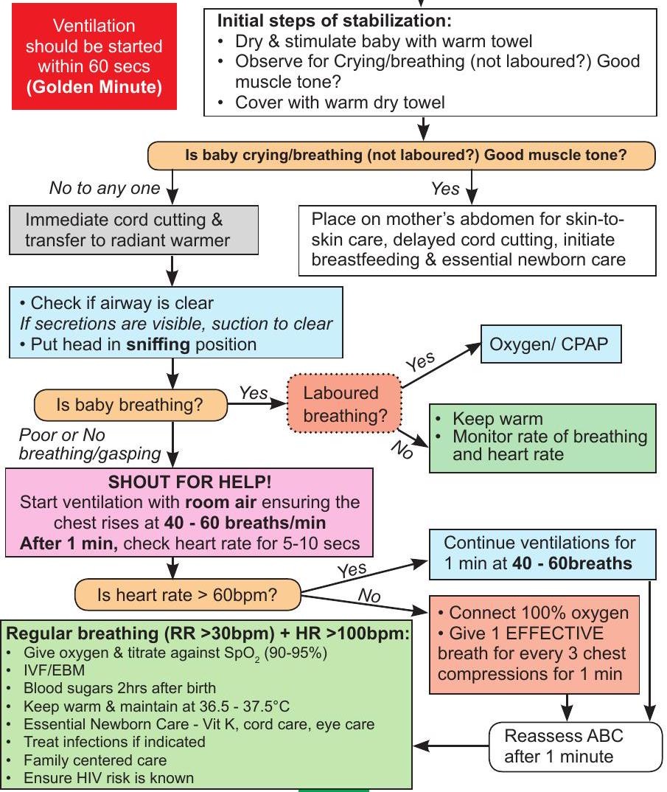
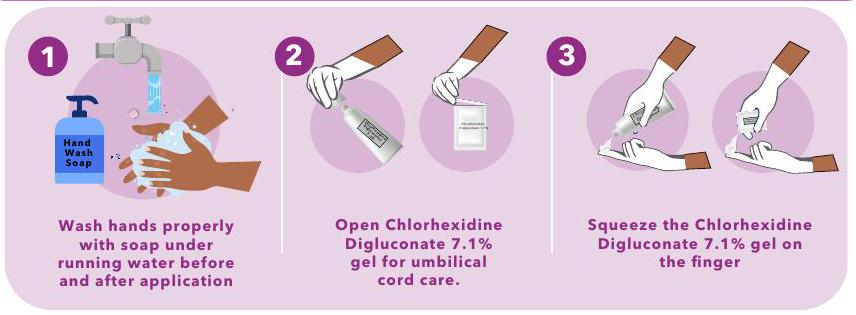
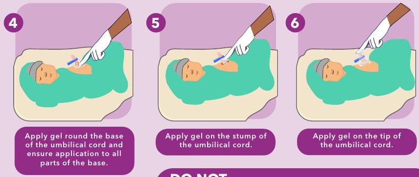

Newborn Care (Part 1): Resuscitation, Essential Care & Feeding
Neonatal Resuscitation
For trained health workers - Anticipate and prepare
Essential Newborn Care
- Keep warm and maintain body temperature $36.5-37.5^{\circ} \mathrm{C}$
- Cord care
- For term babies - Apply Chlorhexidine digluconate 7.1% on the cord immediately after cutting the cord and then once daily up to the 7th day. (see next page on procedure).
- For Pre-term babies - Apply Chlorhexidine digluconate 7.1% once.
- Vitamin K
- All babies born in hospital should receive Vitamin K soon after birth
- All infants aged <14 days should receive Vitamin K on admission if not already given.
- If born at home and admitted aged <14 days give Vitamin K unless already given
- 1 mg Vitamin K IM if weight $\geq 1.5 \mathrm{~kg}, 0.5 \mathrm{mg}$ IM if weight $<1.5 \mathrm{~kg}$
- Administer Tetracycline Eye Ointment to all newborns
- Growth
- Preterm babies should gain about $10-15 \mathrm{~g} / \mathrm{kg} / \mathrm{d}$ of body weight every day after the first 7 days of life.
- Term babies gain weight at $20-30 \mathrm{~g} / \mathrm{d}$. If they are not, check that the right amount of feed is being given.
- Vitamins and Minerals
All premature infants (<36 weeks or <2 kg) should receive the following vitamins and minerals daily once they are on full feeds and/or at age of 2 weeks for a minimum of 6 months to 1 year:
- 2.5 mls of multivitamin syrup daily
- Folate 2.5 mg weekly
- Iron supplementation (refer to page 7 for dosages)
- Vit D 400IU orally daily
- Daily calcium supplements( $120-140 \mathrm{mg} / \mathrm{kg} / \mathrm{d}$ elemental calcium)
- Daily phosphorus ( $60-90 \mathrm{mg} / \mathrm{kg} / \mathrm{d}$ )
- Kangaroo mother care (KMC). Refer to The National KMC guidelines
Essential Newborn Care: Cord Care Application
Application steps for chlorhexidine gel in the immediate post delivery period.
APPLICATION OF CHLORHEXIDINE DIGLUCONATE 7.1% GEL (CHX) FOR NEWBORN CORD CARE AFTER BIRTH.
Apply Chlorhexidine Digluconate 7.1% daily for 7 days for umbilical cord care to prevent infection on the newborn baby. If the cord falls before day 7 stop application
DO NOT
- DO NOT apply anything else on the umbilical cord after applying Chlorhexidine Digluconate 7.1% gel.
- DO NOT clean off any Chlorhexidine Digluconate 7.1% gel from the umbilical cord after FIRST application. Wait for 24 hours.
- DO NOT use Chlorhexidine Digluconate 7.1% gel if umbilical cord is infected. STOP APPLICATION immediately and seek medical advice from the nearest health facility.
REMEMBER:
Always clean and dry the umbilical cord with lukewarm water and cotton wool before subsequent new applications.
For more information, please visit the nearest health facility.
Newborn Feeding / Fluid Requirements
Newborn $\geq \mathbf{1 . 5 k g}$: Feeding / Fluid requirements
- Well baby - Immediate milk feeding -Table A. For first feed give 7.5 mls and each feed increase by this amount until full daily volume reached
- Day 1 - Unstable baby start with IV 10% Dextrose for the first 24 hours. To stimulate the gut give $2 \mathrm{mls} / \mathrm{kg}$ of colostrum via NGT every 3hrs once ABC are stabilized - do not deduct this from IVF. Table B
- From Day 2, start feeding with EBM via NGT (unless baby is still unstable) at $30 \mathrm{ml} / \mathrm{kg} /$ day EBM. Increase the EBM feeds by $30 \mathrm{ml} / \mathrm{kg}$ day and reduce IV fluids to keep within the total daily volume until IVF stopped ie until full 3 hourly feed volume achieved appropriate for weight and postnatal age in days. Increase total feeds (IVF + EBM) by $20 \mathrm{ml} / \mathrm{kg} /$ day to max of $150 \mathrm{ml} / \mathrm{kg} /$ day. Once no longer on IVF increase EBM to max of $180 \mathrm{ml} / \mathrm{kg} /$ day, but it may be possible to increase volumes further to as much as $200 \mathrm{mls} / \mathrm{kg} /$ day but seek expert advice. Table C
- For IV fluids from Day 2, add Na+ $2-3 \mathrm{mmol} / \mathrm{kg} /$ day ( $19 \mathrm{mls} / \mathrm{kg}$ of normal saline) and K+ $1-2 \mathrm{mmol} / \mathrm{kg} /$ day ($0.5-1 \mathrm{ml} / \mathrm{kg} /$ day of $15 \% \mathrm{KCl}$) to $10 \%$ dextrose solution.
- Always feed with EBM unless contra-indicated
- Maximum fluid that can be given intravenously is $150 \mathrm{ml} / \mathrm{kg} / \mathrm{d}$.
- If signs of poor perfusion or fluid overload please ask for senior opinion on whether to give a bolus, step-up or step-down daily fluids.
| Age | Total Daily Fluid / Milk Vol. |
|---|---|
| Day 1 | $60 \mathrm{mls} / \mathrm{kg} /$ day |
| Day 2 | $80 \mathrm{mls} / \mathrm{kg} /$ day |
| Day 3 | $100 \mathrm{mls} / \mathrm{kg} /$ day |
| Day 4 | $120 \mathrm{mls} / \mathrm{kg} /$ day |
| Day 5 | $140 \mathrm{mls} / \mathrm{kg} /$ day |
| Day 6 | $160 \mathrm{mls} / \mathrm{kg} /$ day |
| Day 7 | $180 \mathrm{mls} / \mathrm{kg} /$ day |
A. Nasogastric 3hrly feed amounts for well babies on full volume feeds on day 1 and afterwards
| Weight (kg) | 1.5-1.6 | 1.7-1.8 | 1.9-2.0 | 2.1-2.2 | 2.3-2.4 | 2.5-2.6 | 2.7-2.8 | 2.9-3.0 | 3.1-3.2 | 3.3-3.4 | 3.5-3.6 | 3.7-3.8 | 3.9-4.0 |
|---|---|---|---|---|---|---|---|---|---|---|---|---|---|
| Day 1 | 12 | 14 | 15 | 17 | 18 | 20 | 21 | 23 | 24 | 26 | 27 | 29 | 30 |
| Day 2 | 15 | 18 | 20 | 22 | 24 | 26 | 28 | 30 | 32 | 34 | 36 | 38 | 40 |
| Day 3 | 19 | 23 | 25 | 28 | 30 | 33 | 35 | 38 | 40 | 43 | 45 | 48 | 50 |
| Day 4 | 24 | 27 | 30 | 33 | 36 | 39 | 42 | 45 | 48 | 51 | 54 | 57 | 60 |
| Day 5 | 28 | 32 | 35 | 39 | 42 | 46 | 49 | 53 | 56 | 60 | 63 | 67 | 70 |
| Day 6 | 32 | 36 | 40 | 44 | 48 | 52 | 56 | 60 | 64 | 68 | 72 | 76 | 80 |
| Day 7 | 36 | 41 | 45 | 50 | 54 | 59 | 63 | 68 | 72 | 77 | 81 | 86 | 90 |
B. IV fluid rates in $\mathbf{ml} \mathbf{/} \mathbf{h r}$ for unstable newborns $\boldsymbol{>} \mathbf{1 . 5} \mathbf{k g}$ who cannot be fed
| Weight (kg) | 1.5-1.59 | 1.6-1.7 | 1.8-1.9 | 2.0-2.1 | 2.2-2.3 | 2.4-2.5 | 2.6-2.7 | 2.8-2.9 | 3.0-3.1 | 3.2-3.3 | 3.4-3.5 | 3.6-3.7 | 3.8-3.9 |
|---|---|---|---|---|---|---|---|---|---|---|---|---|---|
| Day 1 | 4 | 4 | 5 | 5 | 6 | 6 | 7 | 7 | 8 | 8 | 9 | 9 | 10 |
| Day 2 | 5 | 6 | 6 | 7 | 8 | 8 | 9 | 10 | 10 | 11 | 12 | 12 | 13 |
| Day 3 | 6 | 7 | 8 | 9 | 10 | 10 | 11 | 12 | 13 | 14 | 15 | 15 | 16 |
| Day 4 | 8 | 9 | 10 | 11 | 12 | 13 | 14 | 15 | 16 | 17 | 18 | 19 | 20 |
| Day 5+ | 9 | 10 | 11 | 12 | 13 | 15 | 16 | 17 | 18 | 19 | 20 | 22 | 23 |
C. Standard regimen for introducing NGT feeds in an unstable newborn $\boldsymbol{\geq} \mathbf{1 . 5 k g}$ after $\mathbf{2 4} \mathbf{~ h r s ~ I V ~ f l u i d s}$}
Day
1.5-1.6 kg 1.7-1.8 kg 1.9-2.0kg 2.1-2.2 kg
2.3-2.4 kg 2.5-2.6 kg 2.7-2.8 kg 2.9-3.0 kg
EBM 3hrly IVF mls/hr EBM 3hrly IVF mls/hr EBM 3hrly IVF mls/hr EBM 3hrly IVF mls/hr
EBM 3hrly IVF mls/hr EBM 3hrly IVF mls/hr EBM 3hrly IVF mls/hr EBM 3hrly IVF mls/hr
D-1 3 4 4 4 4 5 4 5 5 6 5 6 6 7 6 7 D-2 6 3 7 4 7 4 8 4 9 5 10 5 10 6 11 6 D-3 12 3 13 3 15 3 16 4 18 4 19 4 21 5 22 5 D-4 17 2 20 2 22 2 24 3 26 3 29 3 31 3 33 4 D-5 23 1 26 2 29 2 32 2 35 2 38 2 41 2 44 2 D-6 29 1 33 1 37 1 40 1 44 1 48 1 52 1 55 1 D-7 35 0 39 0 44 0 48 0 53 0 57 0 62 0 66 0
| Day | 1.5-1.6 kg | 1.7-1.8 kg | 1.9-2.0kg | 2.1-2.2 kg | 2.3-2.4 kg | 2.5-2.6 kg | 2.7-2.8 kg | 2.9-3.0 kg | ||||||||
|---|---|---|---|---|---|---|---|---|---|---|---|---|---|---|---|---|
| EBM 3hrly | IVF mls/hr | EBM 3hrly | IVF mls/hr | EBM 3hrly | IVF mls/hr | EBM 3hrly | IVF mls/hr | EBM 3hrly | IVF mls/hr | EBM 3hrly | IVF mls/hr | EBM 3hrly | IVF mls/hr | EBM 3hrly | IVF mls/hr | |
| D-1 | 3 | 4 | 4 | 4 | 4 | 5 | 4 | 5 | 5 | 6 | 5 | 6 | 6 | 7 | 6 | 7 |
| D-2 | 6 | 3 | 7 | 4 | 7 | 4 | 8 | 4 | 9 | 5 | 10 | 5 | 10 | 6 | 11 | 6 |
| D-3 | 12 | 3 | 13 | 3 | 15 | 3 | 16 | 4 | 18 | 4 | 19 | 4 | 21 | 5 | 22 | 5 |
| D-4 | 17 | 2 | 20 | 2 | 22 | 2 | 24 | 3 | 26 | 3 | 29 | 3 | 31 | 3 | 33 | 4 |
| D-5 | 23 | 1 | 26 | 2 | 29 | 2 | 32 | 2 | 35 | 2 | 38 | 2 | 41 | 2 | 44 | 2 |
| D-6 | 29 | 1 | 33 | 1 | 37 | 1 | 40 | 1 | 44 | 1 | 48 | 1 | 52 | 1 | 55 | 1 |
| D-7 | 35 | 0 | 39 | 0 | 44 | 0 | 48 | 0 | 53 | 0 | 57 | 0 | 62 | 0 | 66 | 0 |
Give $\underline{2 \mathrm{mls} / \mathrm{kg} \text { of colostrum every 3hours as trophic feeds on Day } 1 \text { after } A, B \text { and } C \text { are stabilized - DO NOT SUBTRACT THIS FROM THE IVF. }}$
Newborn < $\mathbf{1 . 5 k g}$: Feeding / Fluid requirements
(well newborns)
All babies <1.5 kg and well (without respiratory distress, who have not required BVM resuscitation, and do not have a congenital malformation as a contraindication to feeding) start feeds with EBM of 5 mls and increase by 5 mls each 3 hourly feed until full 3 hourly feed volume achieved ( $80 \mathrm{mls} / \mathrm{kg} /$ day on day 1 and increasing by $20 \mathrm{mls} / \mathrm{kg}$ each day). Always use EBM for NGT feeds unless contra-indicated. Causes of failure to gain weight should be carefully investigated; if underlying causes have been excluded case by case decisions should be made on how best to support nutritional intakes to enable growth. Fortifiers are not routinely required but such babies should routinely receive recommended vitamin and mineral supplements at appropriate post-gestational ages. It may be possible to increase volumes further to as much as $200 \mathrm{mls} / \mathrm{kg} /$ day but seek expert advice.
| Age | 0.6kg | 0.7 kg | 0.8kg | 0.9 kg | 1.0kg | 1.1kg | 1.2kg | 1.3kg | 1.4kg | 1.5kg |
|---|---|---|---|---|---|---|---|---|---|---|
| D-1 | 6 | 7 | 8 | 9 | 10 | 11 | 12 | 13 | 14 | 15 |
| D-2 | 8 | 9 | 10 | 11 | 13 | 14 | 15 | 16 | 18 | 19 |
| D-3 | 9 | 11 | 12 | 14 | 15 | 17 | 18 | 20 | 21 | 23 |
| D-4 | 11 | 12 | 14 | 16 | 18 | 20 | 21 | 23 | 25 | 26 |
| D-5 | 12 | 14 | 16 | 18 | 20 | 22 | 24 | 26 | 28 | 30 |
| D-6 | 14 | 16 | 18 | 20 | 23 | 25 | 27 | 29 | 32 | 34 |
(Unstable newborns)
- Day 1 - unstable newborn (convulsions, unconscious, severe respiratory distress evidenced by severe chest wall indrawing, absent bowel sounds) start IV 10% Dextrose for 24 hrs . To stimulate the gut, give $2 \mathrm{mls} / \mathrm{kg}$ of colostrum via NGT every 3 hrs to be started when A,B,C are stabilized - do not deduct this from IVF!
- Day 2: Start feeding with EBM via NGT (unless baby is still unstable) at $30 \mathrm{ml} / \mathrm{kg} /$ day EBM. Increase the EBM feeds by $30 \mathrm{ml} / \mathrm{kg} /$ day and reduce IV fluids to keep within the total daily volume until IVF stopped i.e. until full 3 hourly feed volume is achieved appropriate for weight and postnatal age in days. Increase total feeds (IVF + EBM) by $20 \mathrm{ml} / \mathrm{kg} /$ day to max of $150 \mathrm{ml} / \mathrm{kg} /$ day. Once no longer on IVF increase to max of $180 \mathrm{ml} / \mathrm{kg} /$ day , but it may be possible to increase enteral feeds further to as much as $200 \mathrm{mls} / \mathrm{kg} /$ day but seek expert advice.
- Maximum fluid that can be given intravenously is $150 \mathrm{ml} / \mathrm{kg} / \mathrm{d}$.
| Age | Total Daily Fluid/Milk Vol. |
|---|---|
| Day 1 | $80 \mathrm{mls} / \mathrm{kg} /$ day |
| Day 2 | $100 \mathrm{mls} / \mathrm{kg} /$ day |
| Day 3 | $120 \mathrm{mls} / \mathrm{kg} /$ day |
| Day 4 | $140 \mathrm{mls} / \mathrm{kg} /$ day |
| Day 5 | $160 \mathrm{mls} / \mathrm{kg} /$ day |
| Day 6+ | $180 \mathrm{mls} / \mathrm{kg} /$ day |
- For IV fluids from Day 2, add Na+ $2-3 \mathrm{mmol} / \mathrm{kg} /$ day ( $19 \mathrm{mls} / \mathrm{kg}$ of normal saline) and K+ $1-2 \mathrm{mmol} / \mathrm{kg} /$ day ( $0.5-1 \mathrm{ml} / \mathrm{kg} /$ day of $15 \% \mathrm{KCl}$) to $10 \%$ dextrose solution.
- Always feed with EBM unless contra-indicated.
Standard regimen for introducing NGT feeds for unstable newborns <1.5 kg
| Day | 0.6kg | 0.7 kg | 0.8 kg | 0.9 kg | 1.0-1.1kg | 1.2-1.3 kg | 1.4-1.5 kg | |||||||
|---|---|---|---|---|---|---|---|---|---|---|---|---|---|---|
| EBM 3 hrly | IVF mls/hr | EBM 3 hrly | IVF mls/hr | EBM 3 hrly | IVF mls/hr | EBM 3 hrly | IVF mls/hr | EBM 3 hrly | IVF mls/hr | EBM 3 hrly | IVF mls/hr | EBM 3 hrly | IVF mls/hr | |
| D-1 | 2 | 2 | 3 | 3 | 4 | 4 | 5 | |||||||
| D-2 | 2 | 2 | 3 | 2 | 3 | 2 | 3 | 3 | 4 | 3 | 5 | 4 | 5 | 4 |
| D-3 | 5 | 2 | 5 | 2 | 6 | 2 | 7 | 2 | 8 | 3 | 9 | 3 | 11 | 4 |
| D-4 | 7 | 1 | 8 | 1 | 9 | 2 | 10 | 2 | 12 | 2 | 14 | 3 | 16 | 3 |
| D-5 | 9 | 1 | 11 | 1 | 12 | 1 | 14 | 1 | 16 | 1 | 19 | 2 | 22 | 2 |
| D-6 | 11 | 0 | 13 | 0 | 15 | 0 | 17 | 0 | 20 | 0 | 23 | 0 | 27 | 0 |
| D-7 | 14 | 0 | 16 | 0 | 18 | 0 | 20 | 0 | 24 | 0 | 28 | 0 | 33 | 0 |
Give $2 \mathrm{mls} / \mathrm{kg}$ of colostrum every 3hours as trophic feeds on Day 1 after A, B and C are stabilized - DO NOT SUBTRACT THIS FROM THE IVF.